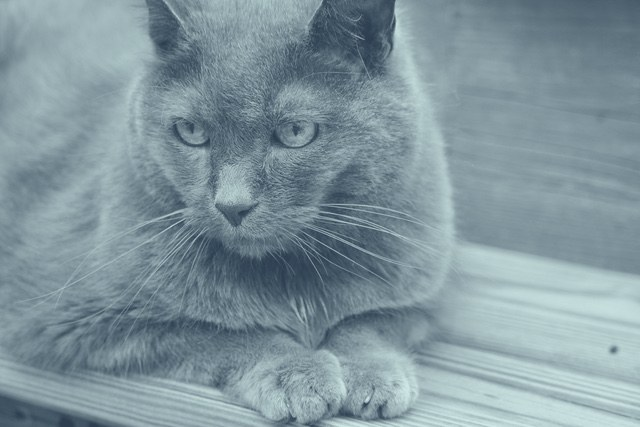

For anyone who works with animals
BLUE dog delivers grief-informed consulting and training built on clinical expertise in animal loss, euthanasia trauma, and the specific occupational stressors that animal care professionals encounter. Veterinarians, vet techs, shelter staff, animal control officers, and others doing this work are all in scope.
The occupational reality

Animal care professionals face a specific category of occupational exposure that is consistently underaddressed. The work involves daily contact with animal death, euthanasia decisions, grieving clients, and, in shelter and animal control settings, the cumulative weight of high-volume mortality.
This is a specific clinical phenomenon: moral stress, secondary traumatic stress, and grief fatigue arising from repeated exposure to animal suffering and death in a professional context where these experiences are consistently underaddressed and underrecognized.
The result is measurable: higher rates of turnover, decreased job performance, and elevated rates of occupational mental health challenges in veterinary and animal welfare roles compared to the general workforce.
The distress that occurs when a professional knows the right course of action but is constrained from taking it, or when they must make decisions about animal death with incomplete information, limited resources of the animal's family, or competing stakeholder expectations.
The indirect trauma that develops through repeated exposure to the suffering and grief of others. In animal care settings, this includes client grief, animal suffering, and the clinician's own proximity to animal death and euthanasia.
What builds up when professionals are repeatedly exposed to loss — their clients' grief and, often, their own — without adequate support or processing time.
By role
Veterinarians carry a specific burden: they are the decision authority in euthanasia conversations, they absorb client grief directly, and they operate in clinical environments where emotional responses to animal death are frequently suppressed in the name of professionalism.
BLUE dog works with veterinary practices to provide consulting on the structural and cultural factors that drive moral stress in clinical teams, and to provide training that gives veterinarians specific tools for client communication around animal death, euthanasia, and terminal diagnosis.
Contact us for veterinary consultingVet techs carry some of the most sustained direct contact with animals in clinical settings, with the least institutional support for the occupational weight of that contact. They assist with euthanasia, monitor critically ill patients, and absorb client distress in roles where that exposure is routinely underacknowledged.
Our training addresses secondary traumatic stress recognition and response specific to vet tech responsibilities, and our consulting identifies the structural factors that leave vet techs underserved.
Inquire about vet tech trainingShelter staff and rescue workers face a distinct version of occupational stress: high-volume animal death, relinquishment, and the ongoing tension between available resources and animal need. In many settings, euthanasia decisions are made under resource and space constraints that add significant moral weight to an already difficult process.
BLUE dog provides training and consulting specifically for shelter organizations, with consulting focused on policy, team culture, and the structures that protect workforce wellbeing.
Contact us for shelter consultingAnimal control officers encounter animal suffering and death in field conditions, often with limited resources and public-facing pressure. They also handle animal family member grief and conflict directly, in circumstances that can be volatile and emotionally complex. The occupational mental health needs of this role are rarely addressed in municipal wellness programs.
We provide training for animal control teams and consulting for municipal animal services organizations, addressing both individual role-specific stress and the structural factors that determine how well officers are supported over time.
Inquire about animal control trainingOur approach
Our consulting and training draws on clinical expertise in grief, trauma, and the human-animal bond, built specifically for veterinary and animal welfare settings.
Our consulting works through leadership and policy to build the structures that support staff over time.
We come to each project with a working understanding of your field. We work in your terminology and context, and we understand the clinical realities of animal care work.
Contact us to discuss consulting or training options.
Contact us about consulting